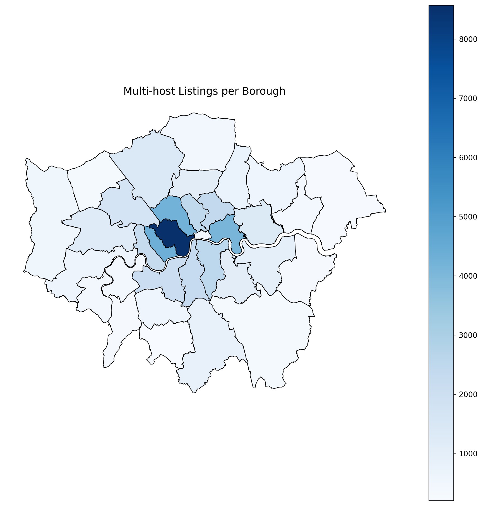
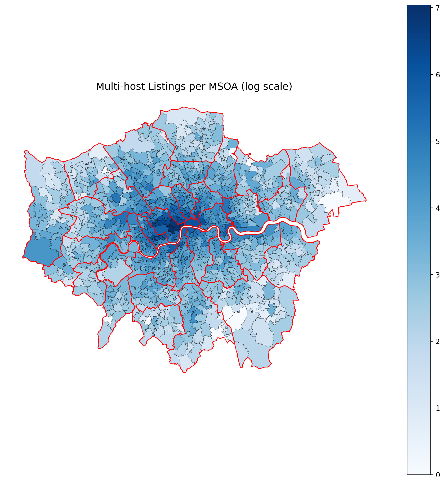
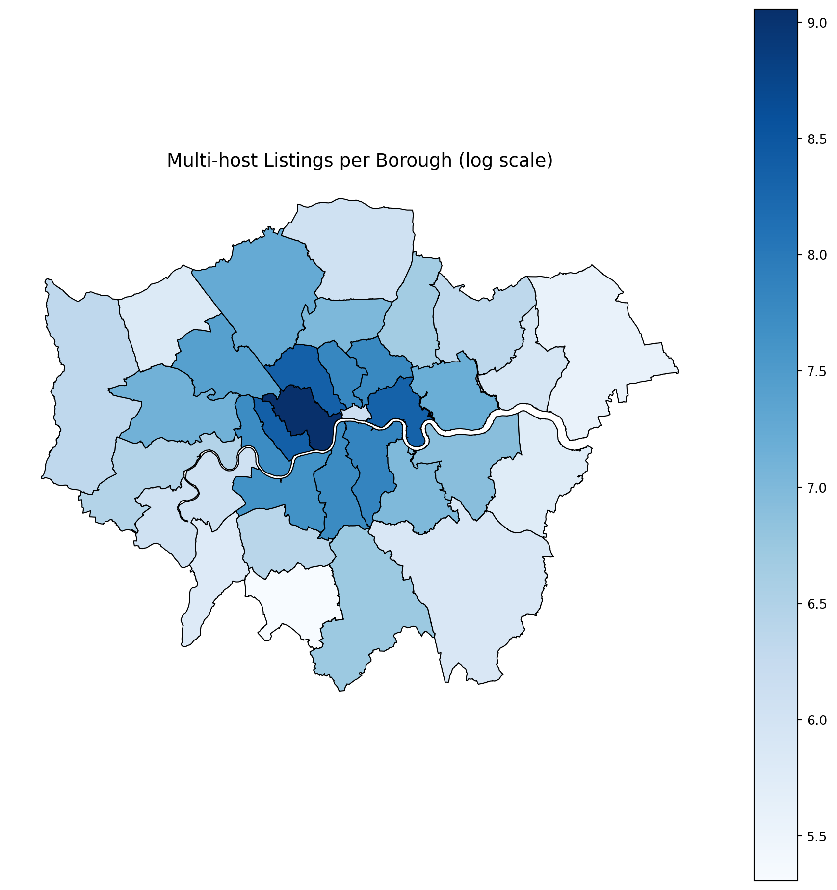
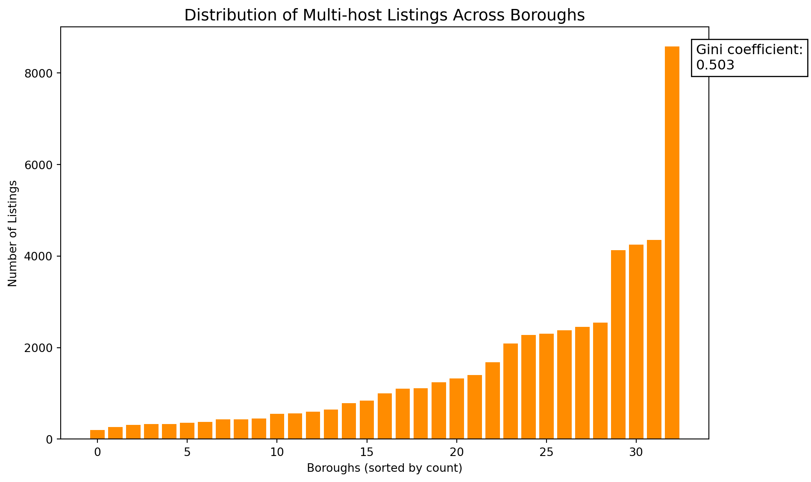
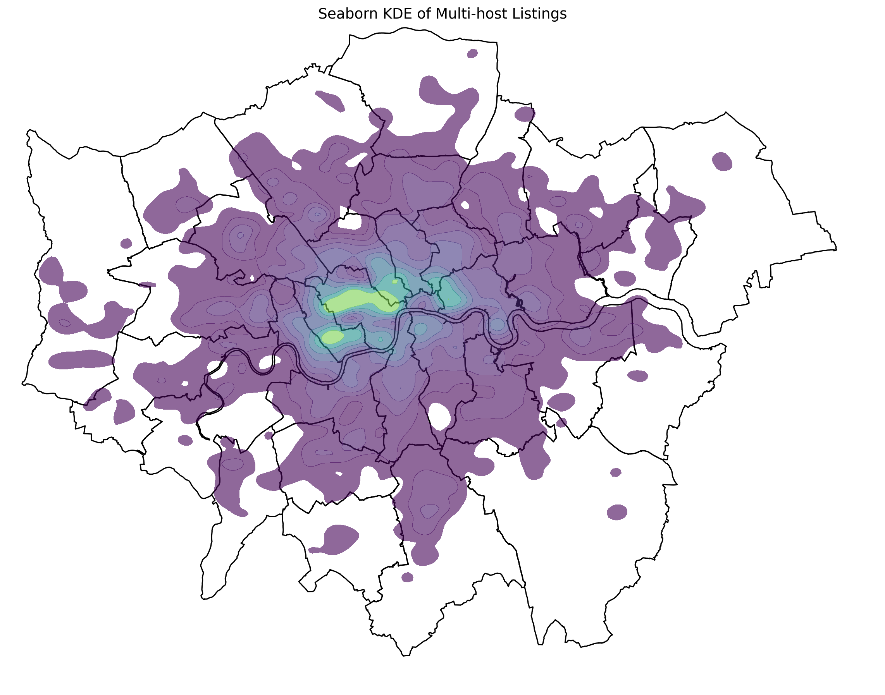
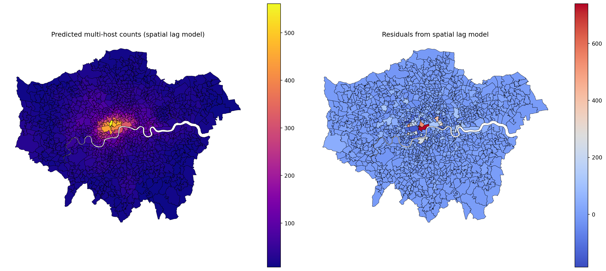
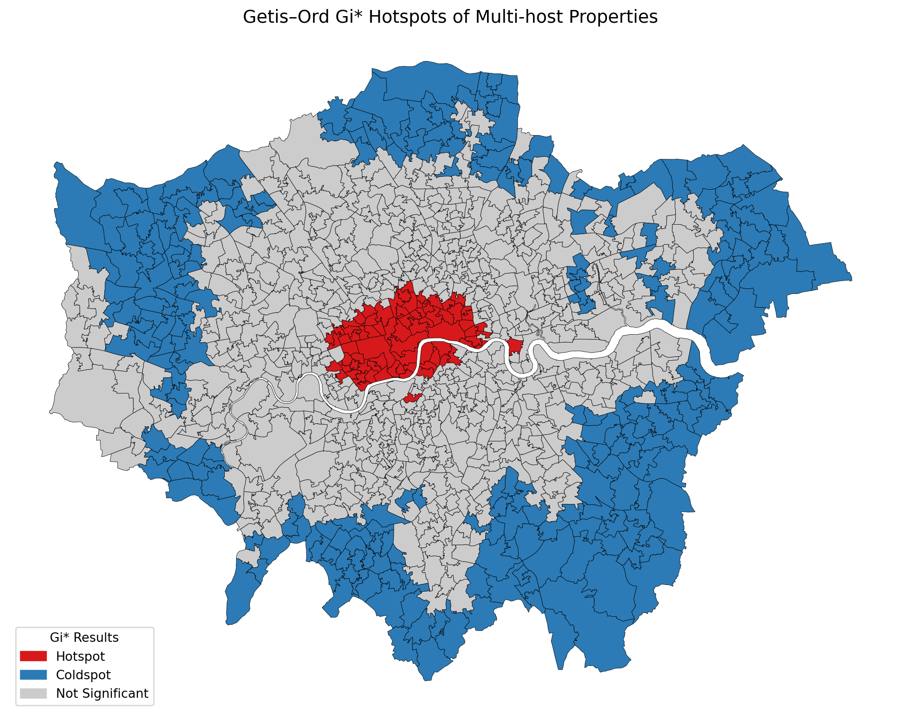

To begin with, I will start by reading in all the necessary files, which are the listings CSV, the borough boundary data, and then the MSOA data.
In order to further analyse, I will take these following steps: - Counts and distributions (MSOA/borough, normal/log). - Normality checks (Shapiro–Wilk). - Gini coefficient (MSOA and borough) → here it acts as a descriptive inequality measure alongside distributions. - Density visualization (KDE attempt, maps). - Global spatial autocorrelation (Moran’s I). - Neighbor definition comparison (KNN vs Distance Band). - Spatial Error Model. - *Local clustering (Getis–Ord Gi)**. - Return to inequality in discussion → you can revisit the Gini in the conclusion, tying it to spatial clustering.
-———
First, the following two maps will be the distribution of counts (tallied per area) for the Borough and MSOA data.
#####MSOA:


Now that I have plotted these, I want to create a basic distribution analysis.

Just to test whether this is a bad skew (although I would say the diagram is pretty obvious…), I will do a Shapiro-Wilk p-value test:
Shapiro-Wilk p-value: 2.327478492219949e-46Because from this bar chart of the normal distribution, which is very extremely positively skewed, I want to try creating a log-scaled histogram to see if that changes anything.

And again let’s test the Shapiro-Wilk p-value:
Shapiro-Wilk p-value (log counts): 0.0300The Shapiro–Wilk test on the raw MSOA counts returned a p‑value of 2.3^{-46}, providing overwhelming evidence against normality. This confirms what the histogram suggested: the distribution of multi‑host listings is extremely skewed. After applying a log transformation, the p‑value increased to 0.0300. Although this is still below the conventional 0.05 threshold (meaning the log‑transformed data cannot be considered perfectly normal), the improvement is substantial. The log scale reduces skewness and brings the distribution closer to normality, making it more suitable for visualization and interpretation, especially when comparing areas with smaller counts.
To better visualise the distribution, the following map applies a log scale transformation. This adjustment reduces the dominance of areas with exceptionally high counts (such as Westminster), allowing spatial patterns in other boroughs to remain visible and interpretable.


I will now do a quick Gini test, which measures how unevenly multi‑host listings are distributed across areas. A higher Gini value indicates that activity is concentrated in fewer places, while a lower value suggests a more even spread.
The Gini coefficient ranges from 0 (perfect equality) to 1 (maximum inequality), with values above about 0.5 generally considered high.

The Gini coefficient of 0.503 at the borough scale indicates a moderate degree of inequality in the distribution of multi‑host listings across London. Some boroughs host substantially more multi‑host activity than others, but the overall pattern is less extreme than at finer spatial resolutions.

At the MSOA scale, the Gini coefficient rises to 0.627, revealing a much higher degree of spatial inequality. This shows that inequality is not only present between boroughs, but also concentrated within them: a relatively small number of MSOAs account for a disproportionately large share of multi‑host listings, while the majority contain very few or none. In other words, hotspots of multi‑host activity emerge at the neighbourhood level, highlighting that regulation or policy responses cannot rely solely on borough‑wide averages but must account for highly localized concentrations.
-——— ## Autocorrelation & Point Pattern Analysis
Kernel Density Estimation (KDE) allows you to move beyond raw counts by creating a smooth surface that highlights where multi‑host listings are most concentrated. This helps reveal localized hotspots and spatial patterns that might be obscured when only looking at aggregated counts.

Now the following map has decided on fixd boundaries:
So I think this simpler map might be better for displaying a simplified version of the KDE considering who we are presenting it to. Howwever, I will need to continue working on this, as the heat map does not seem to correspond somehow with the actual results, so maybe I have made it too smooth and diluted in my attempt to accurately match it to the boundary lines. So it will need some more work.
Now because I find that both these maps look like they’re a little bit off when I’m comparing them to the count (although that is possible in KDE because it is different) I will definitely continue from here. For the remaining autocorrelation I will first do Moran’s I:
Moran's I: 0.6465
p-value (permutation): 0.0010
z-score (normal approx): 42.761
MSOAs with zero neighbors (should be 0): 0
Moran’s I of 0.6465 with a p-value of 0.001 indicates strong, statistically significant spatial clustering of multi-host listings across London MSOAs. High-count areas are surrounded by other high-count areas, confirming that the distribution is far from random. This suggests concentrated zones of multi-host activity that may warrant targeted policy attention.
Having confirmed spatial autocorrelation with Moran’s I, I will now test the spatial lag and error models to assess whether the variation in multi-host density is better explained by neighboring effects or unobserved spatial structure in the census-like boundary data.
Spatial Lag Model (counts only)
ρ (spatial lag coefficient): 0.9229
Pseudo R²: 0.7203
AIC: 10973.48
Intercept: 5.0279
While I ran the spatial lag model to explore potential spillover effects between neighboring MSOAs, I don’t believe it adds meaningful insight in this context. Just because two areas are adjacent doesn’t imply that multi-host listing counts in one directly influence the other — these are not inherently relational phenomena. The clustering observed is more likely due to shared local conditions than spatial dependence, so including the lag model may misrepresent the underlying dynamics.
Since adjacency alone doesn’t imply causal influence between MSOAs, I turn instead to a spatial error model to capture unobserved spatial clustering in the residuals.
REGRESSION RESULTS
------------------
SUMMARY OF OUTPUT: GM SPATIALLY WEIGHTED LEAST SQUARES
------------------------------------------------------
Data set : unknown
Weights matrix : unknown
Dependent Variable :multi_host_count Number of Observations: 1061
Mean dependent var : 53.9123 Number of Variables : 5
S.D. dependent var : 93.6301 Degrees of Freedom : 1056
Pseudo R-squared : 0.1214
------------------------------------------------------------------------------------
Variable Coefficient Std.Error z-Statistic Probability
------------------------------------------------------------------------------------
CONSTANT -90.17953 48.28972 -1.86747 0.06184
USUALRES -0.02064 0.00482 -4.28147 0.00002
POPDEN -0.19173 0.05168 -3.70956 0.00021
HHOLDS 0.07458 0.01196 6.23686 0.00000
AVHHOLDSZ 36.14739 17.21963 2.09920 0.03580
lambda 0.92825
------------------------------------------------------------------------------------
================================ END OF REPORT =====================================The model shows that while household variables like number of households and average household size are positively associated with multi‑host listings, population and density are negatively associated. However, the most striking result is the very high and significant spatial error coefficient (lambda ≈ 0.93), which indicates that even after accounting for these demographic factors, there remains strong spatial autocorrelation in the residuals. In other words, clustering of multi‑host activity is not fully explained by population or housing characteristics alone, but is (obvioiusly) impacted by another variable. If we could find some data on tourism, housing cost, or anything else like this that could definitely further expand this.
However, crucially this above output is not very presentable to a mayor. So while we can maybe discuss it, saying our own research showed that these variables used show that there are other factors that need to be accounted for, I think it would be better not to show the output as it might not be visually pleasing (like even I don’t wanna look at it realistically).
Next, I will use the Getis‑Ord Gi statistic to identify local hotspots and coldspots of multi‑host activity.
MSOA11CD count GiZ GiP GiSig
0 E02000001 447 3.169964 0.002 Hotspot
1 E02000001 447 2.227341 0.006 Hotspot
2 E02000002 3 -0.382412 0.084 Not Significant
3 E02000003 16 -0.369450 0.098 Not Significant
4 E02000004 5 -0.331185 0.158 Not Significant
So because the MSOA data for some reason doesn’t recognise that the polygons are connected to one another (so it thinks they are seperate) I had to define the number of neighbours (which I set to 5 so it isn’t too many and over the top of a strange pattern) but this does mean this map is not entirely accurate. It is still interesting though.
Now I will do the same with the boroughs, which doesn’t have that problem of neighbouring. I think this could be good to show initially (so it is clear where the hotspots and relevant boroughs are as I think this is more important for policy than MSOAs)

This map uses the standard Getis–Ord Gi* method with Queen contiguity and a 95% confidence threshold, which is widely accepted in spatial analysis. The input values are normalized by borough area (per km²), ensuring fair comparison across differently sized regions. While this conservative approach may underdetect coldspots, it ensures statistical rigor and avoids overinterpreting weak patterns. For exploratory purposes, a relaxed threshold (e.g. 90%) can be used in parallel to surface borderline cases.